Al Rojo Tattoo Studio
Tu piel, nuestra obra.
agenda tu horaEl Estudio
Al Rojo Tattoo nació para que tatuarte no se sienta como ir al doctor. Estamos en Ovalle y acá la idea es simple: trabajo personalizado, buena conversa y cero juicios. Nos gusta conocer a cada persona detrás del diseño, porque un buen tattoo parte por entender tu historia. Entre nosotros hay de todo: de lo tradicional a lo otaku, de lo minimal a lo que se te ocurra. Lo importante es que quede con tu esencia y se vea bien con el tiempo.
Nuestros Artistas
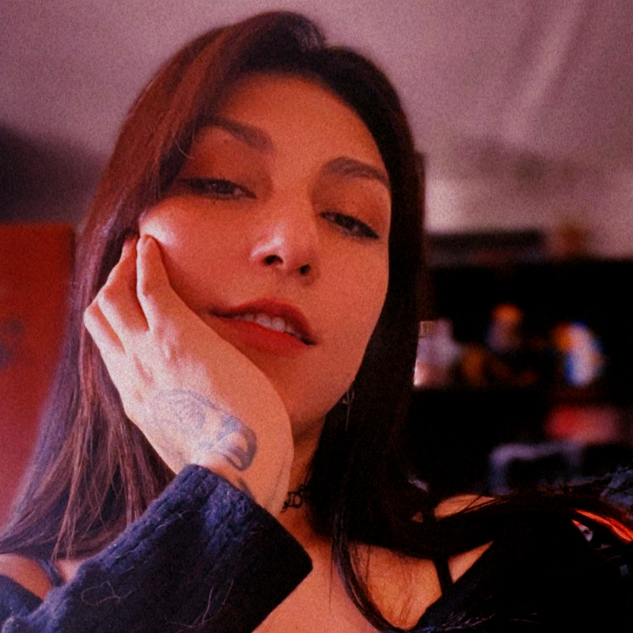
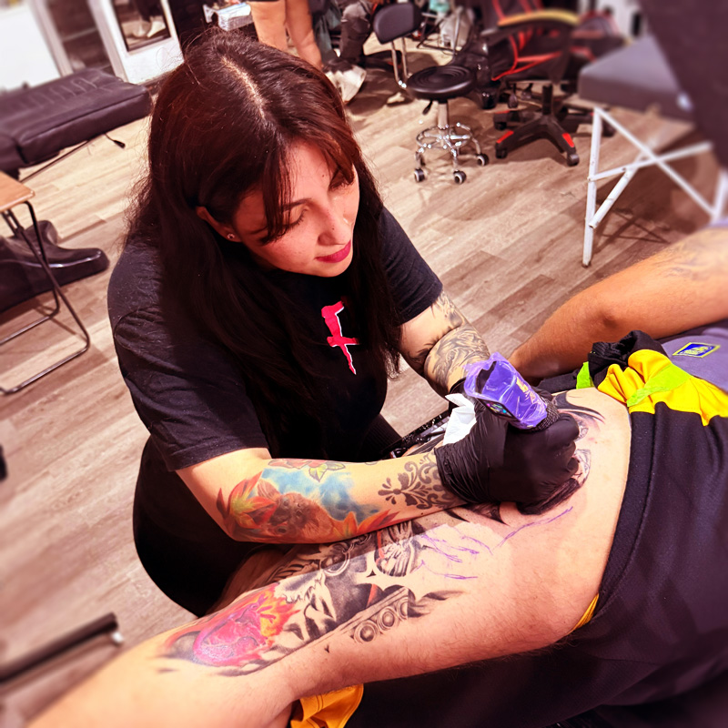
Isamar Fuentes
Anime / Oriental
Soy Isa, tatuo hace 3 años en Ovalle. Me manejo en varios estilos porque me aburre encerrarme en uno solo ✨ Me gusta trabajar de forma personalizada y conectar con la gente. Si cachai de anime, cosas sobrenaturales o fantasía, hablemos de eso también jajaja. Encuentras más de mi trabajo en mi IG.
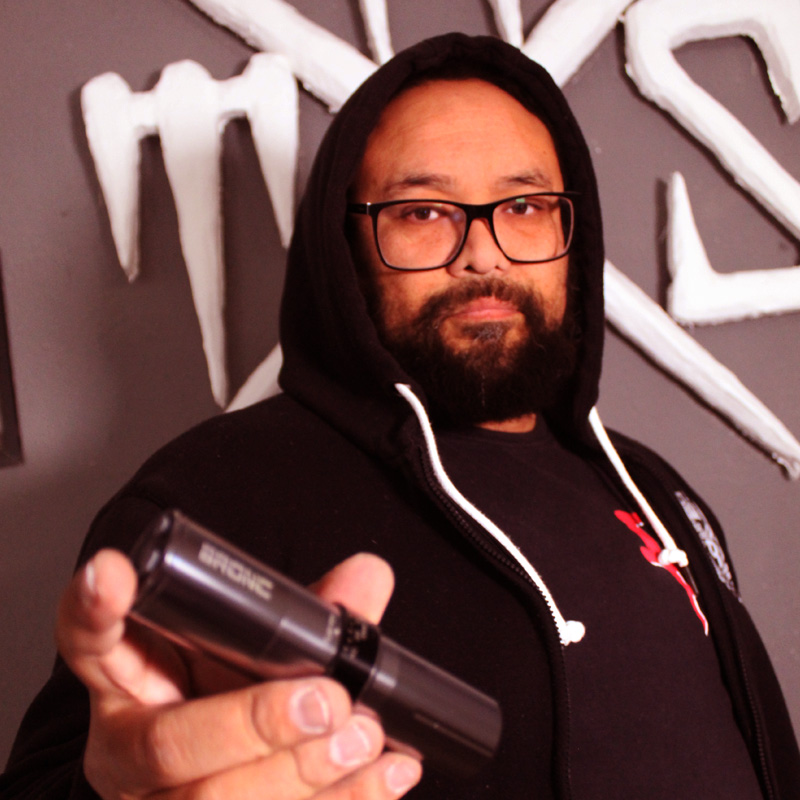
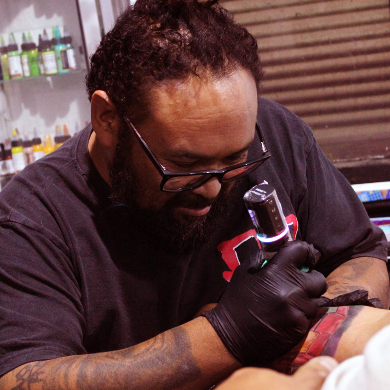
Juan Rojo
Full Color
Yo me muevo 100% en full color. Morados intensos, verdes radioactivos, esa paleta que brilla y se nota. Llevo más de 10 años tatuando y me especializo en que el color quede potente y dure. He sido premiado en varias convenciones y también he estado como jurado nacional e internacional. Si quieres un tatuaje con color que impacte, aquí estamos
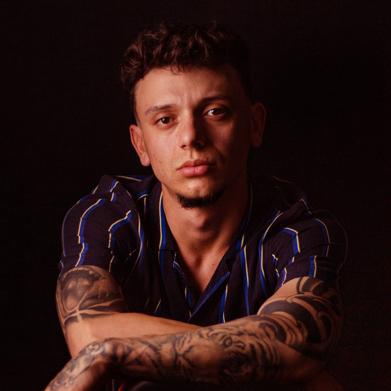
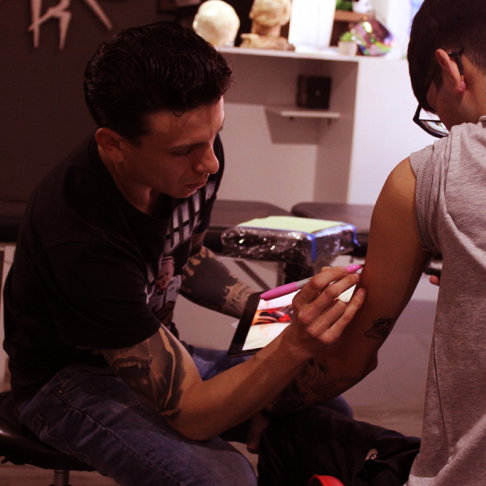
Julián Patiño
Black and Gray
Soy colombiano y estoy tatuando en Chile desde el 2015. Lo mio es el black and gray con onda chicana y callejera. Me encanta trabajar caricaturas, retratos y piezas con harto realismo en grises. También he participado en varias exposiciones mostrando mi trabajo. Si buscas un tatuaje con actitud y detalle en black and gray, hablame.
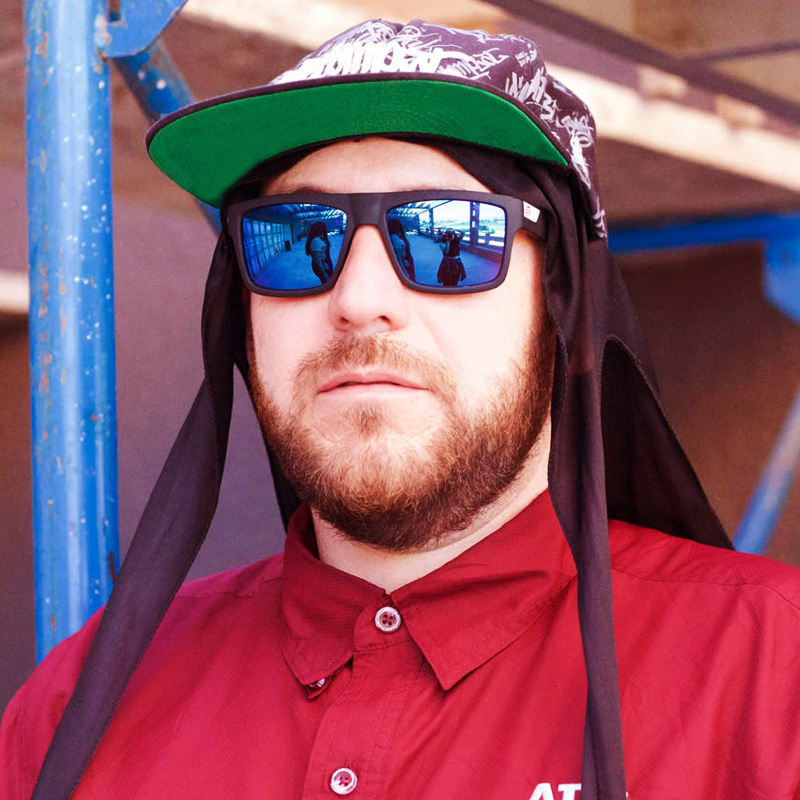
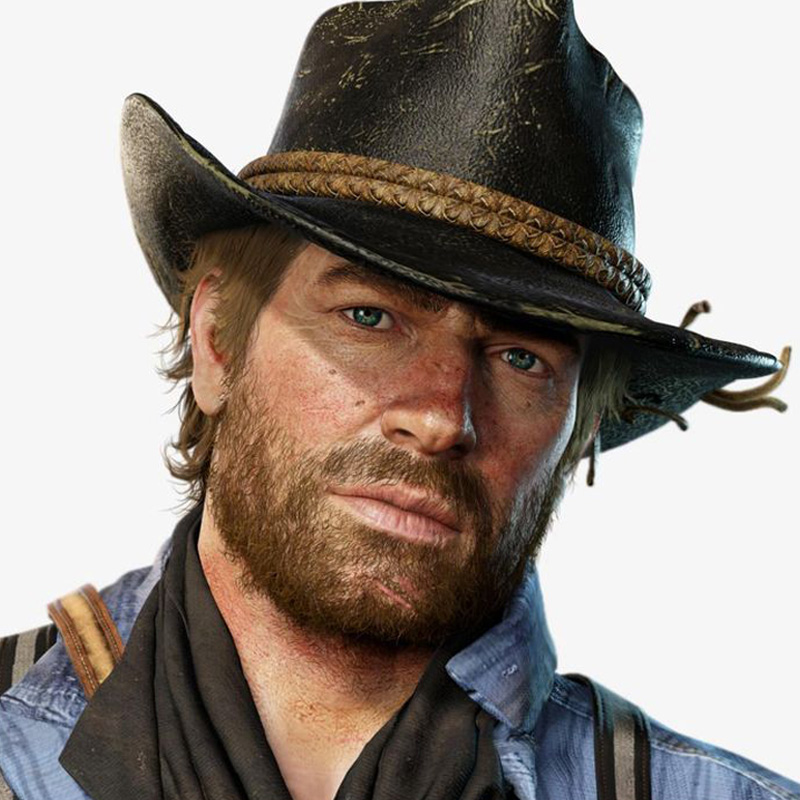
Memosaki
Dibujo desde que tengo memoria y empecé a tatuar a los 32. Llevo 3 años practicando y soy tatuador oficial en el estudio desde noviembre del 2025. Me muevo entre el tattoo, la ilustración y el diseño gráfico . También estoy metido en programación ahora, así que si la página se ve rara... fui yo 😆. Me consideran el don comedias del estudio, así que la sesión de seguro va a ser entretenida.
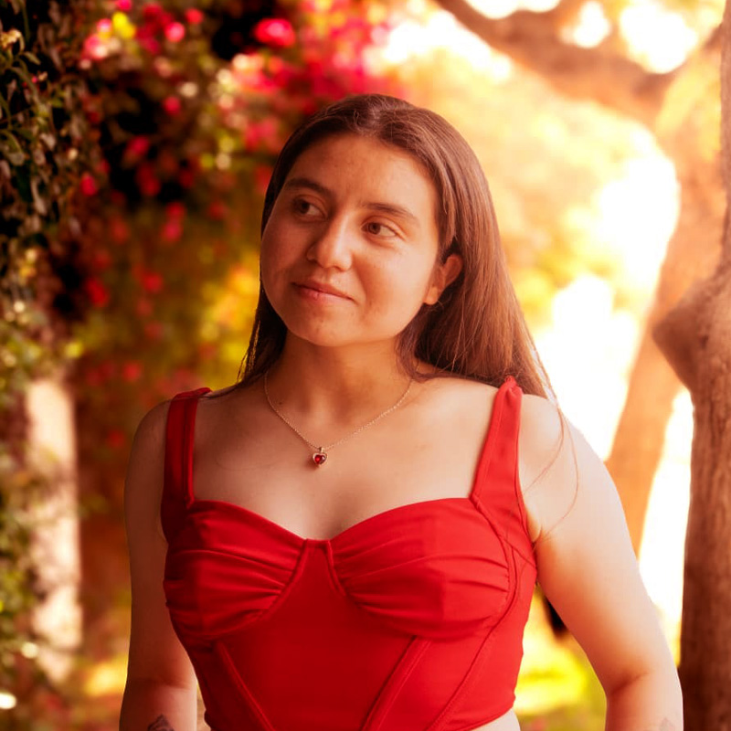
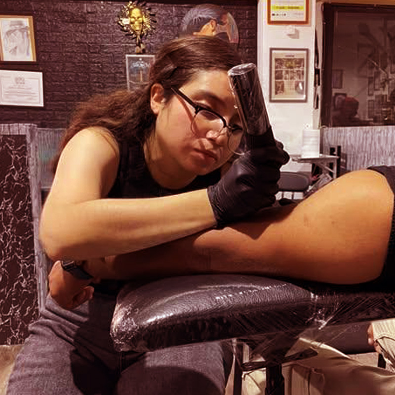
fernanda García
Me muevo entre el tattoo y el esoterismo, así que tengo algo de bruja también. Mi fecha favorita del año es Halloween, obvio. Me encanta dibujar retratos en grafito cuando no estoy tatuando. Soy bajita, kawaii uwu, y tengo fama de tener la voz más suave y relajante del estudio. Soy graciosa también, así que la sesión va a ser tranqui y con risas.
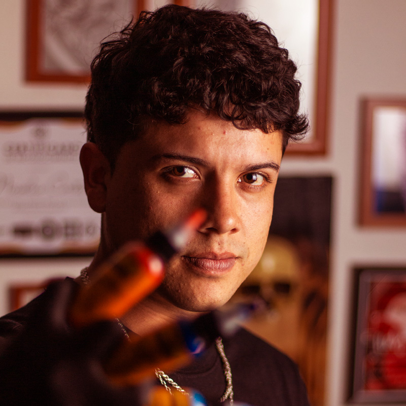
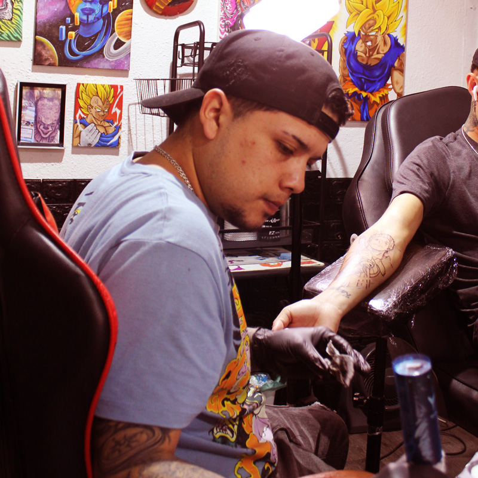
Nicolas Cortes
Black and Gray / Dotwork
Llevo más de una década tatuando y sigo igual de metido en esto. He participado en muchas expos y tengo varios premios, principalmente en black and gray y dotwork. Soy súper versátil y me manejo bien en todos los estilos, desde realismo y anime hasta trabajos más finos en puntillismo. Si tienes una idea, la armamos sin drama. En el estudio soy el que siempre está probando cosas nuevas y subiendo el nivel.
{kind=link}
{kind=link}
{kind=link}
{kind=link}
{kind=link}
{kind=link}
{kind=link}
{kind=link}
{kind=link}
{kind=link}
{kind=link}
{kind=link}